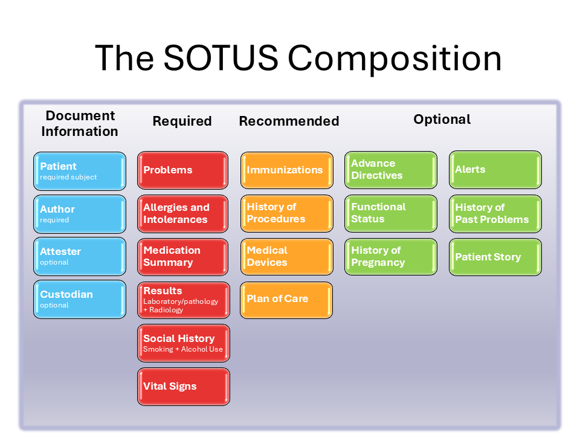

Summary of the United States Implementation Guide
0.0.1 - STU 1

Summary of the United States Implementation Guide
0.0.1 - STU 1

Summary of the United States Implementation Guide - Local Development build (v0.0.1) built by the FHIR (HL7® FHIR® Standard) Build Tools. See the Directory of published versions
| Page standards status: Informative |
The SOTUS is composed of the following sections described below.
Figure 2: The SOTUS composition

Add a description for each section….
The profiles that have been defined for this implementation guide are listed here.
The profiles that have been defined for the US Core Implementation Guide are listed here.
IG © 2025+ HL7 International / Structured Documents. Package hl7.fhir.us.sotus#0.0.1 based on FHIR 4.0.1. Generated 2025-08-28
Links: Table of Contents |
QA Report
| Version History |
 |
Propose a change
|
Propose a change